一、硬碟介紹
GCE 上硬碟的速度無需另外付費購買，預設規則中只要申請越大的硬碟空間，則會得到越好的 IOPS 效能，讓您的服務運作更加順暢
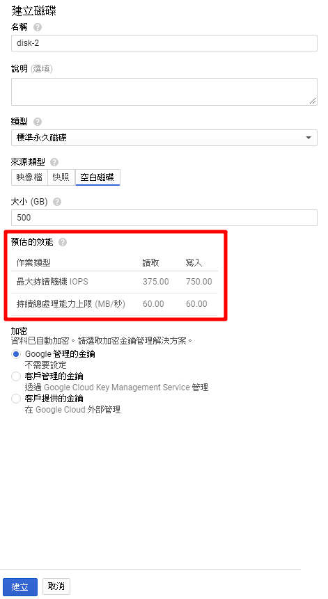
二、PD、SSD、Local SSD 的差異
PD：又稱為標準磁碟 ( Standard Disk )，為 SATA 格式之硬碟，提供大部分情境之作業系統或儲存使用
SSD：固態硬碟，具備較高的 IOPS，當然價格也較昂貴
Local SSD：本機 SSD 硬碟具備 GCE 上最快的 IOPS 選擇，每次選購必須完整租用整個 Local SSD 375G 的大小空間，一台新創 VM 機器跟硬碟是分開用網路連接但是 Local SSD 是跟機器接在一起速度上會更快，也因為這如果樣實體機損壞會造成 SSD 的資料遺失
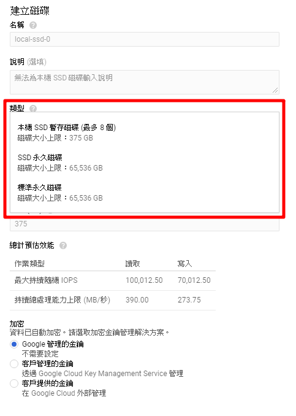
目前 Local SSD 只能在 VM 建立下方的磁碟建立才有
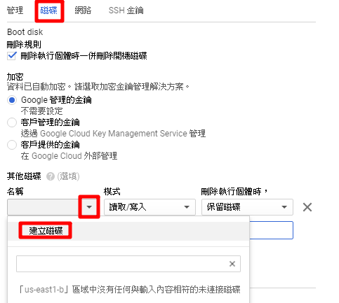
三、刪除主機、保留硬碟
預設硬碟刪除 VM 同時刪除硬碟，把打勾取消就可以避免 VM 硬碟同時刪除
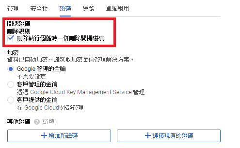
其他硬碟建立時是否跟 VM 一起刪除如下圖地方做設置
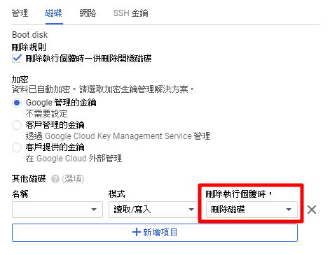
到 Compute Engine → 磁碟，可以看到建立了哪些硬碟
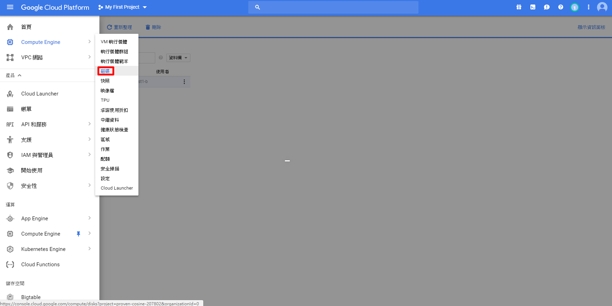
打勾選擇要刪除硬碟，點擊右上角刪除
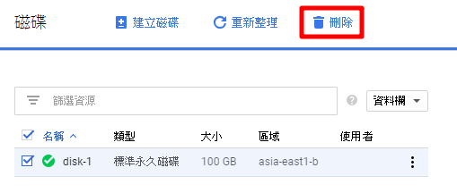
點擊硬碟名子可以進入編輯更改容量
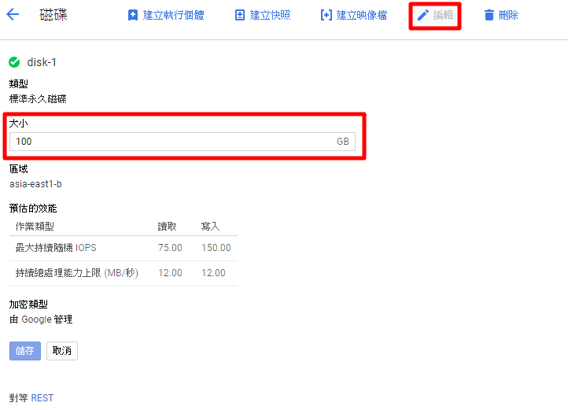
四、使用已建立好硬碟開新 VM
建立新 VM 變更 → 現有磁碟 → 選擇之前保留的硬碟
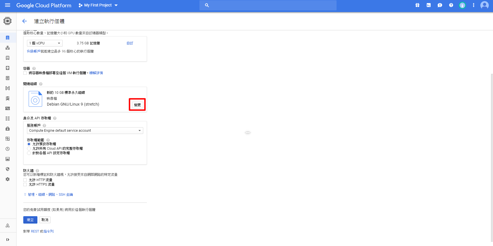
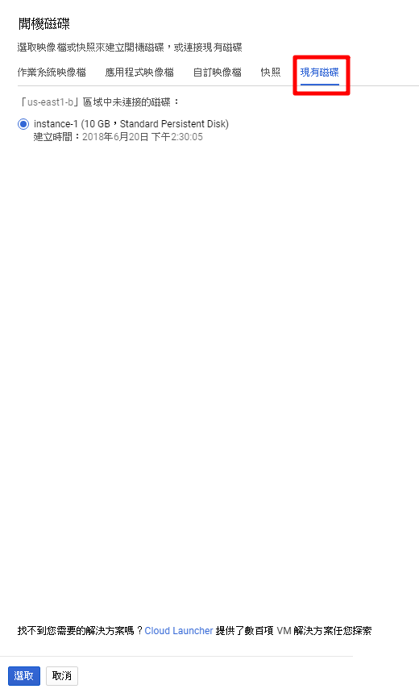
在新開的 VM 名稱不能跟硬碟重複 ( 硬碟的所在範圍不能超出建立時所選擇的 Zone )
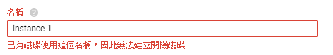
五、快照 ( 快照是 snapshot 的直譯 )：簡單的說就是把硬碟整個備份起來，不管是資料或是狀態就是一份完美個複本，經典使用方式快速備份加還原
快照重新快速部屬的好處：除了來源硬碟是原本的以外，其他參數都可以毫不相關區域可以不一樣、主機規格可以不一樣、連硬碟大小類型都能不一樣
快照可用於快速部屬多台相同的虛擬機，例如：這次設定完網路環境可以建立一份快照，下次要建立另一個虛擬機來架設網站，此時就能直接使用快照快速部屬，就不需要再重頭一行一行指令安裝環境了
建立快照
從選單進入 Computer Engine → 快照 → 建立快照
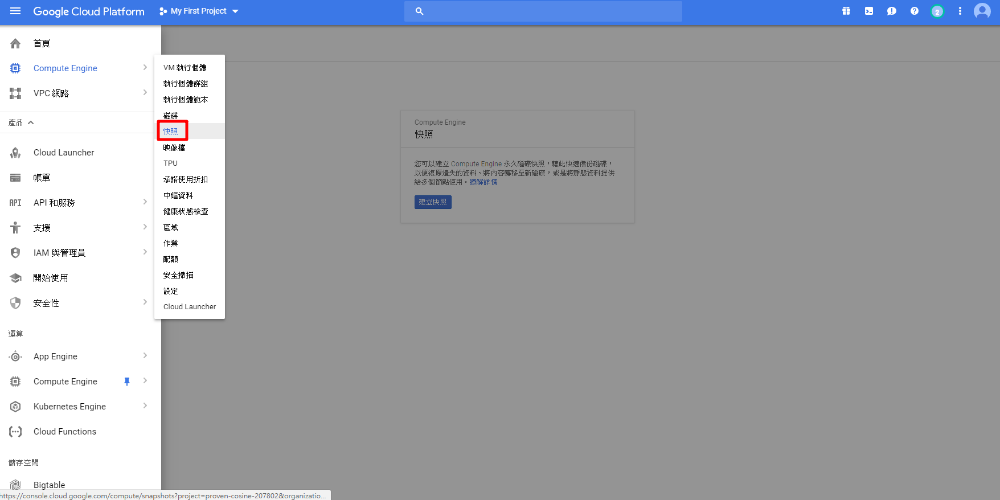
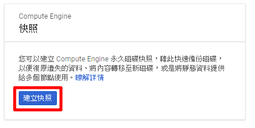
設定名稱，與VM規則一樣，名稱開頭必須為小寫字母，後方最多可接 63 個小寫字母、數字或連字號，但結尾不得為連字號
說明 ( 選填 )，但建議填寫這份快照的狀態或用途，避免一堆快照不知道哪個在做什麼的
來源硬碟：建立快照的硬碟 ( 這邊可視為VM實體 )
VSS：Linux 系統不需要，Windows 可以選 ？ 點開會有介紹
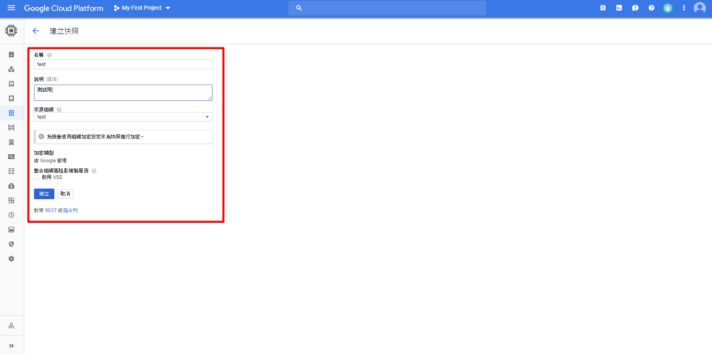
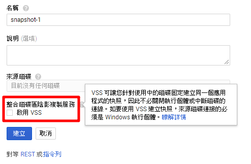
點選建立後，依照硬碟大小需要一點時間來建立，完成後可以看到硬碟大小與快照大小
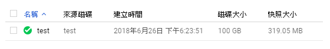
快照還原
雖然說是還原，其實就是建立一個新的執行個體，只是開機硬碟的內容不是原廠的內容，而是自己建立快照當下的內容
建立新 VM 變更 → 快照 → 選擇製作好的快照 (跟使用現有磁碟很像，只是快照可以多台 VM 使用)
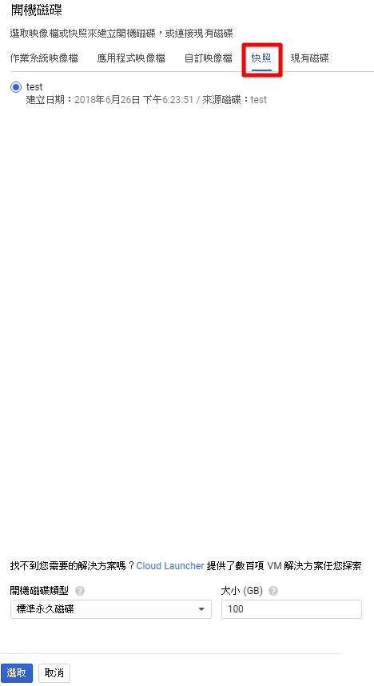